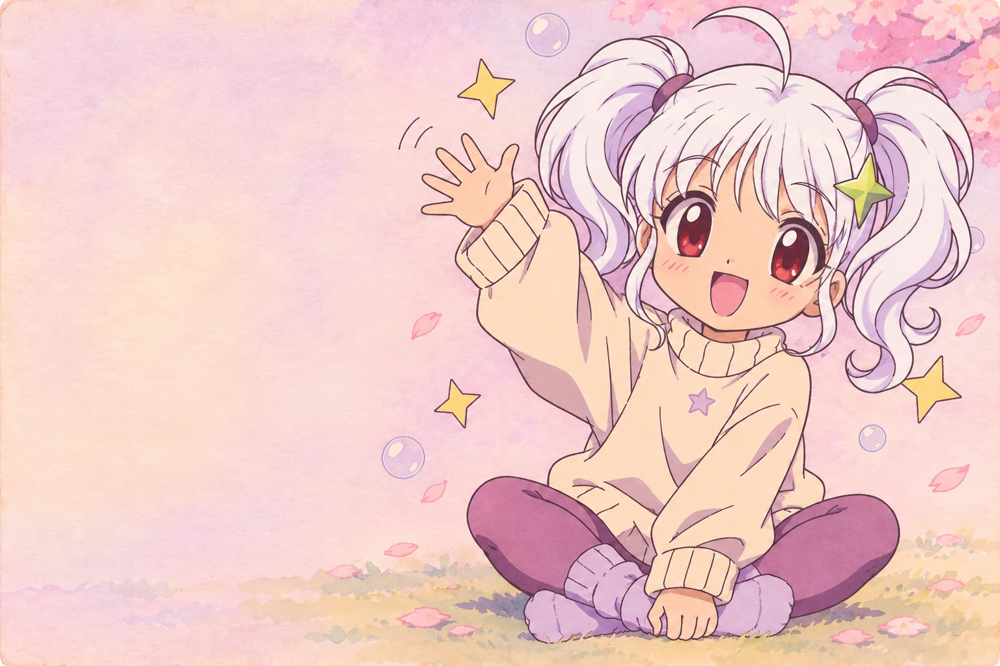

日常闲聊
米拉的示例对话
本地示例选择一个话题开始
点选上方话题，查看一条示例回复。
预设对话示例 · 仅在本页展示，不会发送或保存你的选择。

选择一个话题开始
点选上方话题，查看一条示例回复。
预设对话示例 · 仅在本页展示，不会发送或保存你的选择。
功能特点
清晰的小话题入口，
让每次聊天都容易开始。
日常闲聊
兴趣话题
心情整理
米拉的小约定
有时候，一起听一会儿歌就很好。有时候，你想要自己的空间，也完全没问题。
我会等你准备好了
再继续聊。
你的故事盒子
我会把它们收好，
像把星星放进一个小盒子。
记忆盒子
那天的光线很暖。你说，
想把这个下午多留一会儿。
已保存的回忆：01
咦，这个画面是不是刚刚才看过？
米拉的日记
小小的日常 · 自动整理中
一起听了那首下雨天的歌。
今天不错你说云朵像一团棉花糖。
今天不错你今天还没有来过。我记得你刚刚来过。
再确认明天 23:41，你已经向我道过晚安。
时间待核对同步状态：好像一切正常
 动画分镜
动画分镜
 录像记录
录像记录